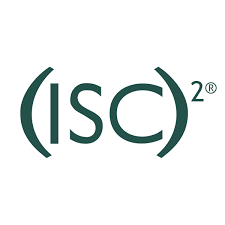
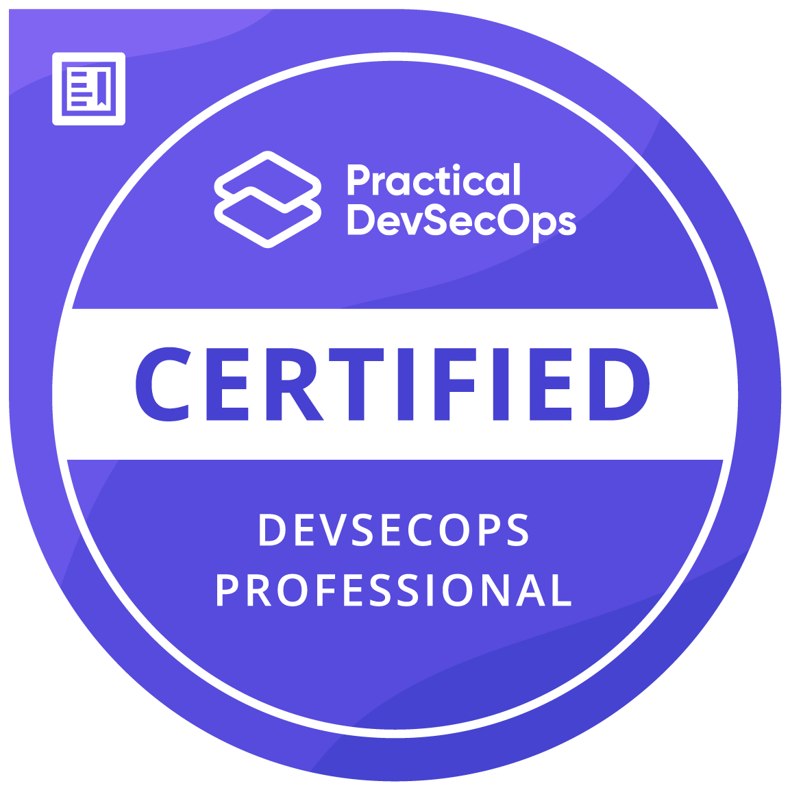
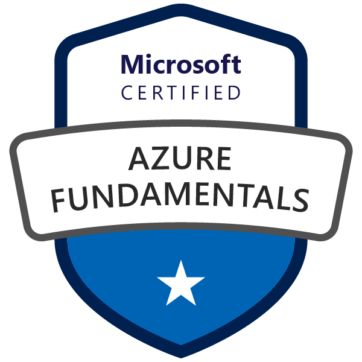
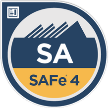
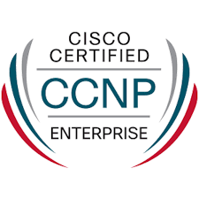

Selected impact
Evidence of security leadership
Credentials
Certifications that support leadership and technical credibility

CISSP
Certified Information Systems Security Professional
01 March 2020
CKA
Certified Kubernetes Administrator
16 November 2024
CDP
Certified DevSecOps Professional
07 December 2023
Azure Fundamentals
Microsoft Certified
30 April 2021
SAFe 4 Agilist
Scaled delivery awareness
05 September 2018
CCNP
Cisco Certified Network Professional
26 September 2012 - 2018Experience
Security leadership, governance and engineering delivery
Leads security strategy, governance and engineering initiatives across secure AI adoption, compliance, DevSecOps, vulnerability management and cloud-native security.
- Key in introducing artificial intelligence securely into the enterprise environment, including DevOps workflows.
- Led ISO 27001, ISO 27701 and SOC 2 Type II security initiatives, supporting certification and reporting outcomes with zero critical findings.
- Built vulnerability prioritisation capability using Trivy, EPSS and KEV intelligence to reduce critical vulnerability response time from 9 days to under 24 hours.
- Embedded DevSecOps controls into CI/CD and Kubernetes environments across development, testing and production.
- Developed executive-level security reporting dashboards and shift-left security practices across the SDLC.
Led security architecture and advisory work for enterprise clients across OT/IT, SD-WAN, cloud migration and compliance-led environments.
- Designed industrial firewall and OT/IT segmentation architectures using Purdue Model security principles.
- Architected SD-WAN security frameworks for multinational environments with standardised security policies.
- Developed secure cloud migration reference architectures using compliance controls, CSPM and IAM frameworks.
- Built security control matrices bridging IT and OT environments.
- Led security workshops with senior stakeholders, translating architecture decisions into business value and risk reduction.
Led senior security engineering delivery for enterprise MSSP clients across financial, healthcare and manufacturing sectors.
- Led technical teams of 5+ engineers, improving delivery standards, mentoring capability and team morale.
- Managed security operations across 100+ network security devices including firewalls, WAFs, proxies and IPS platforms.
- Oversaw enterprise PKI infrastructure with 99.999% availability.
- Led disaster recovery testing for mission-critical environments, achieving 100% recovery success and reducing RTO/RPO by 60%.
- Supported high-severity incident response and remediation across enterprise client environments.
Managed EMEA network infrastructure and enterprise networking projects supporting the transition into security engineering leadership.
- Supported 12+ European office locations as a primary technical networking resource.
- Led routing, switching and infrastructure refresh work across international environments.
- Delivered core Cisco Catalyst chassis switch refresh at the European head office with minimal downtime.
- Managed data centre, WAN optimisation and telephony infrastructure.
- Built the enterprise infrastructure foundation for later security engineering and architecture roles.
Capability
Where leadership and technical depth meet
Security Leadership & Governance
- Security strategy and governance
- Secure adoption of artificial intelligence in enterprise and DevOps environments
- ISO 27001, ISO 27701, NIST CSF, PCI DSS, CIS and SOC 2
- Privacy and compliance-led security initiatives
- Enterprise security posture management
- Stakeholder management and security workshops
DevSecOps & Cloud Security
- DevOps and DevSecOps security
- Cloud architecture with Azure
- CI/CD security with Azure DevOps
- Kubernetes, Docker and container security
- Terraform and infrastructure as code
Security Engineering
- Vulnerability management and prioritisation
- Identity management and PKI
- Multi-vendor firewalls, WAFs and proxies
- Python automation and security tooling
- SIEM platforms including Splunk and FortiSIEM
Enterprise & Industrial Security
- Security architecture design
- Purdue Model and ISA/IEC 62443 awareness
- OT/IT segmentation and industrial firewalls
- Secure cloud migration patterns
- Proof of concept to deployment lifecycle
Professional contribution
Advisory membership
May 2018 - Jan 2022
Advisory Board Member
Centre for Research in Information and Cyber Security (CRICS) and the School of ICT, Nelson Mandela University
Guided and mentored the next generation of cybersecurity professionals through advisory board involvement.
Selected professional development
Recent and leadership-relevant development
Terraform 101: The Ultimate Hands-On Guide [Azure Edition]
Udemy
Prepare for the Certified Kubernetes Administrator Certification
Udemy
Certified DevSecOps Professional
Practical DevSecOps
ISO/IEC 27701:2019 - Privacy Information Management System
Udemy
CISO's Guide to Success
(ISC)2 Professional Development Institute
Communicating with the C-Suite
Professional Development
Introduction to the NIST Cybersecurity Framework
Professional Development
Risk Assessment and Management
Professional Development